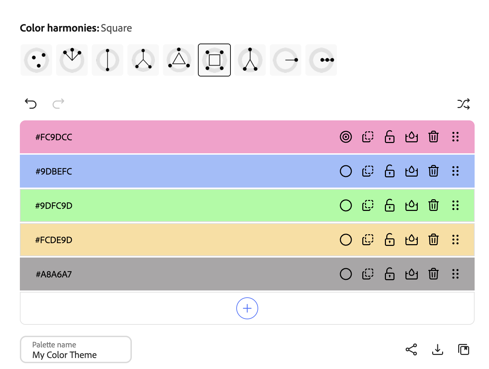

Previous WPI CS Coursework
- Algorithms
- Foundations
- Object Oriented
- Intro to AI
- Graphic Design
Experience
| Skill | Level(A lot/Some/None) |
|---|---|
| HTML: | A lot |
| CSS: | A lot |
| JavaScript/TypeScript: | A lot |
Color Palette (Adobe Generated)
This is the custom color palette I used for this webpage!

Animation
Press the square for a surprise!